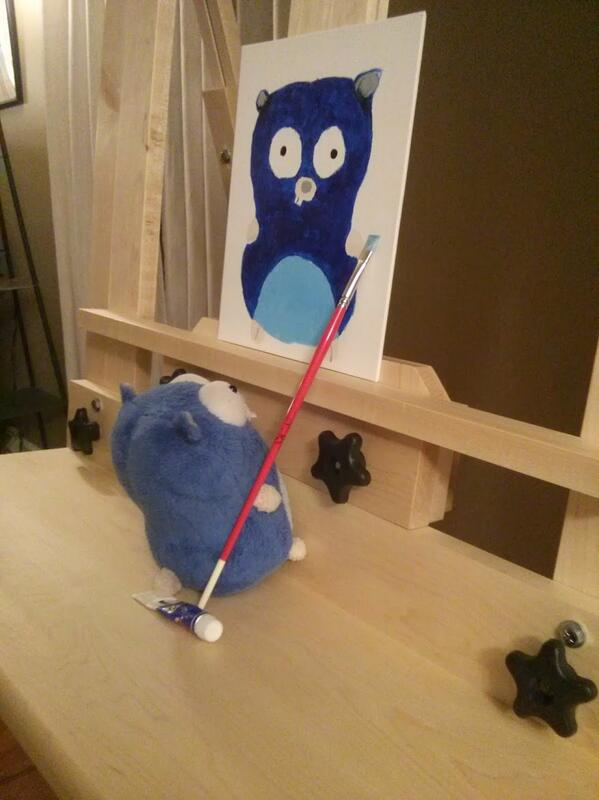
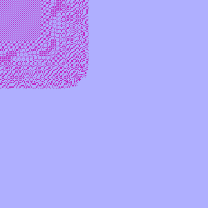
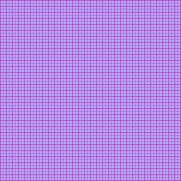
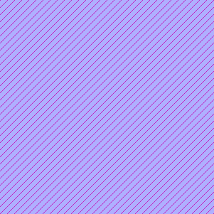
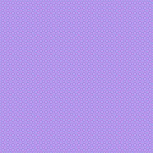

Gerando imagens em GO com biblioteca padrão
Como gerar arquivos com imagens PNG na linguagem GO, usando apenas a biblioteca padrão

https://twitter.com/noahhlo/status/437395572081688576
Lá vem história
No começo do livro A Linguagem de Programação GO, de Donovan & Kernighan - aqui falo um pouco desse livro, há um interessante exercício em gerar GIFs animados, usando apenas a biblioteca padrão de GO.
Como estava saudoso de minhas aventuras no mundo dos fractais, pensei que deveria voltar a fazer desenhos baseados em fórmulas muito simples, para cada ponto de minha tela. Precisaria de alguma biblioteca externa (e GO tem muitas), mas o intento é, além do prazer estético, fazer as coisas com o mínimo de ferramentas.
Então, nesse texto, está o que aprendi para desenhar pontos em um arquivo PNG, com GO purinho.
As ferramentas
Há um grande pacotão, o image, com a base que precisamos. Também há os "sub pacotes" image/png e image/color.
Eventualmente, alguma função de math. E o os, para criar o arquivo.
O programa
Tem um GIST para ele, mas eis o danado:
package main
import (
"image"
"image/color"
"image/png"
"math"
"os"
)
const (
size = 301
fileName = "draw.png"
)
var palette = []color.Color{
color.RGBA{0xaf, 0xaf, 0xff, 0xff},
color.RGBA{0xaf, 0xff, 0xaf, 0xee},
}
func main() {
rect := image.Rect(0, 0, size, size)
img := image.NewPaletted(rect, palette)
for x := 0; x < size; x++ {
for y := 0; y < size; y++ {
if visible(x, y) {
img.SetColorIndex(x, y, 1)
}
}
}
f, err := os.Create(fileName)
if err != nil {
panic(err)
}
defer f.Close()
png.Encode(f, img)
}
func visible(xint int, yint int) bool {
x := float64(xint)
y := float64(yint)
value := math.Pow(x, 9) + math.Pow(y, 9)
module := int64(value) % 3
if module == 0 {
return true
}
return false
}
Criei algumas constantes para usar o const. Esse 301 é pros padrões não ficarem com a parte direita incompleta, apenas isso.
Esses padrões que listarei aqui são encontrados de uma forma binária: faço alguma conta com as coordenadas, pego o módulo congruência 10 (usei 3 também) e verifico se é zero, então decido se pinto ou não o ponto. Por isso criei uma paleta de cores com... duas cores :-), o var palette.
O índice 0 de palette contém a cor que será usada por padrão na imagem, portanto, só precisaremos "pintar" um pixel, apenas se for necessário.
No img.SetColorIndex, o terceiro parâmetro é o índice na paleta, como só existem duas cores, e a primeira é a padrão, se for o caso, usa-se a segunda.
Alguns padrões
mod3pow9
O mais "disruptivo", e cheguei a ele depois de algumas tentativas
value := math.Pow(x, 9) + math.Pow(y, 9)
module := int64(value) % 3
Eu imagino que se relativizar as coordenadas, consigo uma imagem completa, mas isso é pra próxima empreitada.

mod10mult
O primeiro que testei, muito legal, parece uma padrão pra tecidos :).
value := x * y
module := value % 10

mod10add
Vendo a simples multiplicação, como seria a adição?
value := x + y
module := value % 10

mod10summult
Dos simples, o mais bonitinho. Acho que ao invés de tecido serve pra papel.
value := x*x +y*y
module := value % 10

Pro futuro
Tem todas as funções trigonométricas pra explorar nessa pegada. E, é claro, tem o conjunto de Mandelbrot, que foi a verdadeira motivação pra eu descobrir como gerar gráficos em GO. Tem muita coisa feita por aí, mas é tipo um desafio pessoal. Se eu não desenhei o TorBledNam em uma dada linguagem, é porque eu não a usei de verdade.